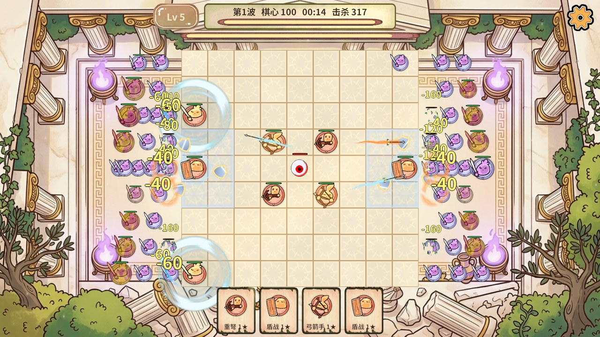
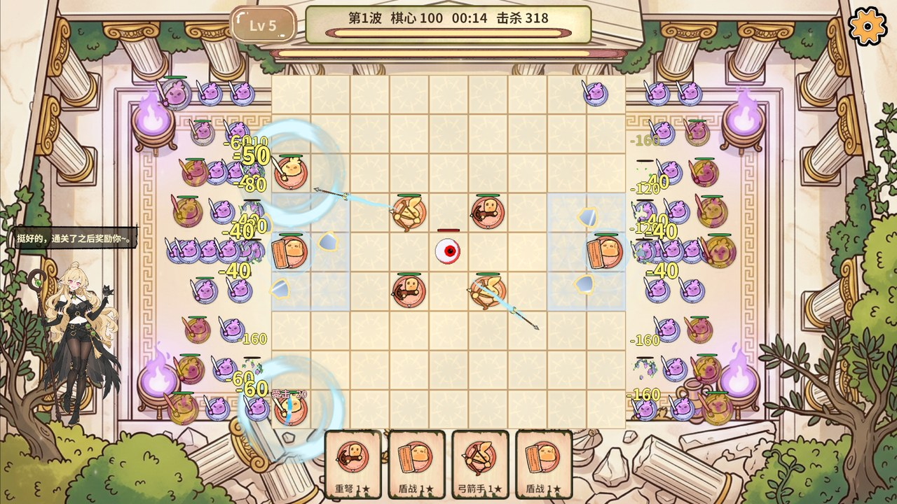
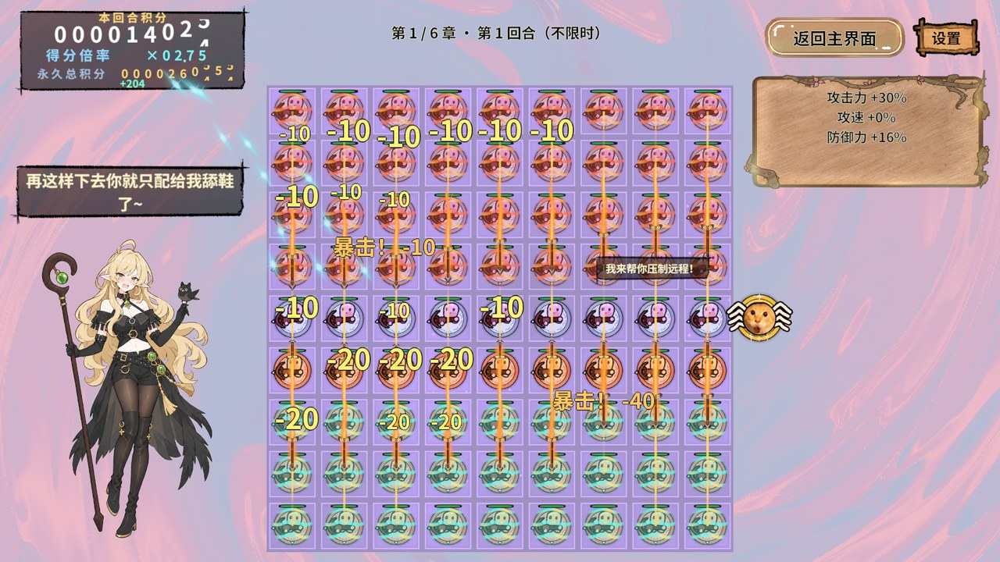
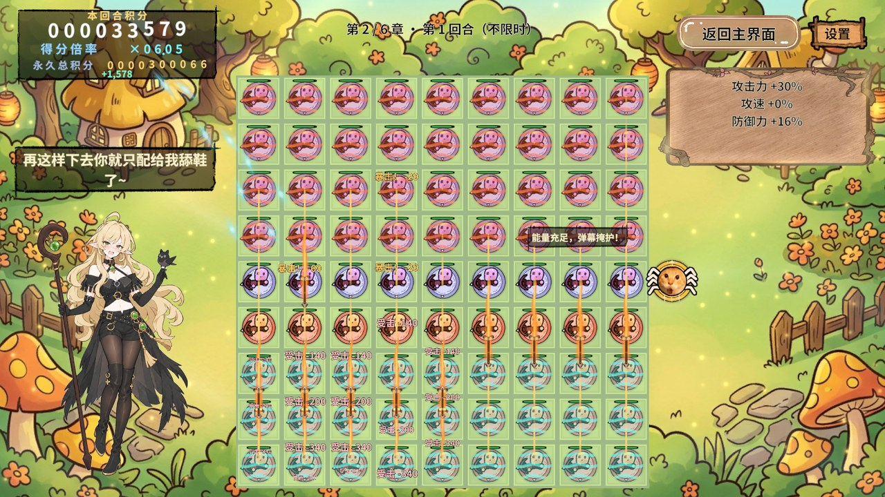
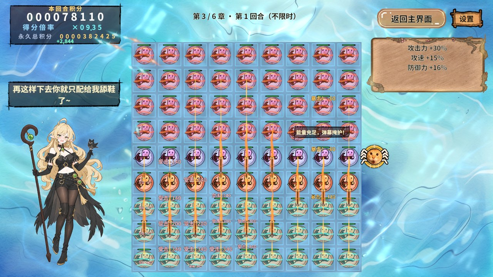
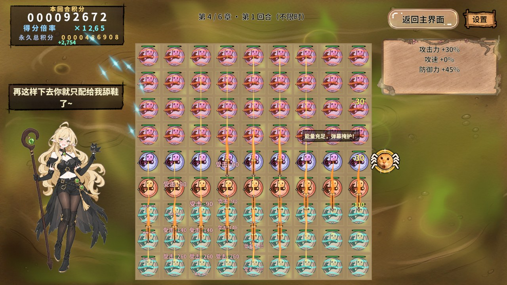
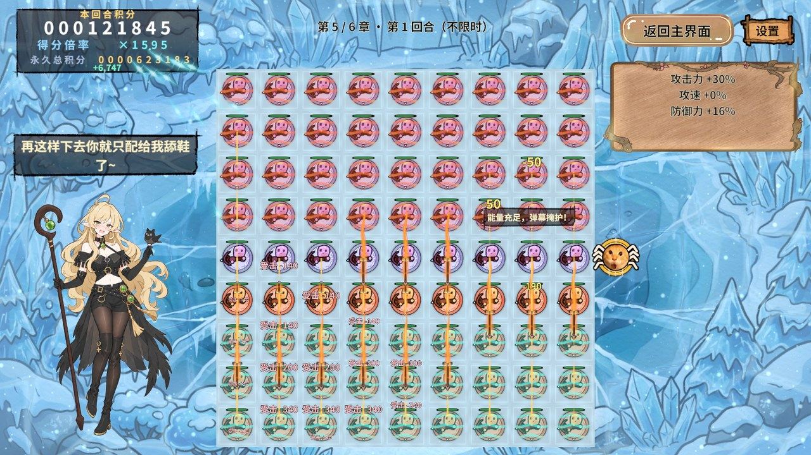
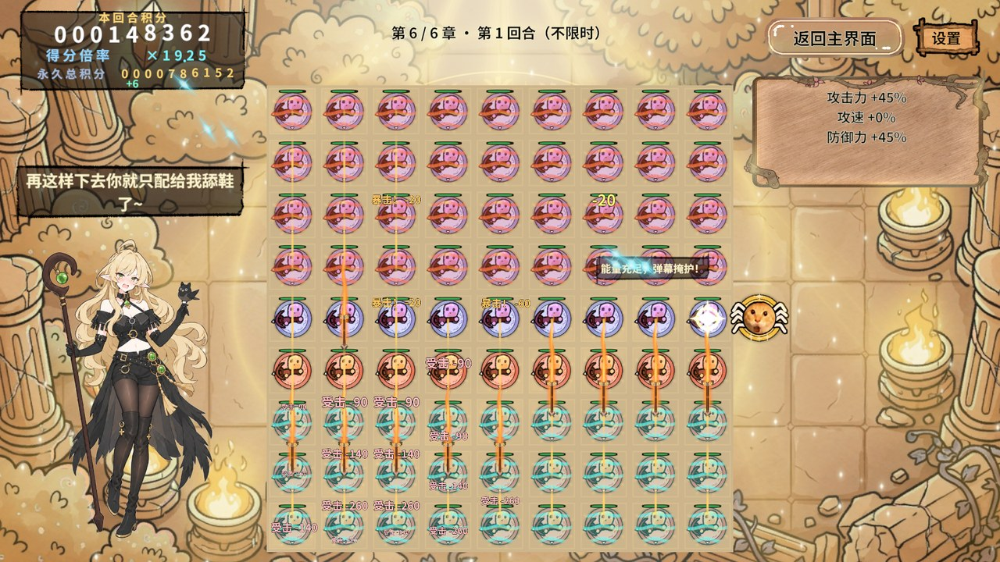
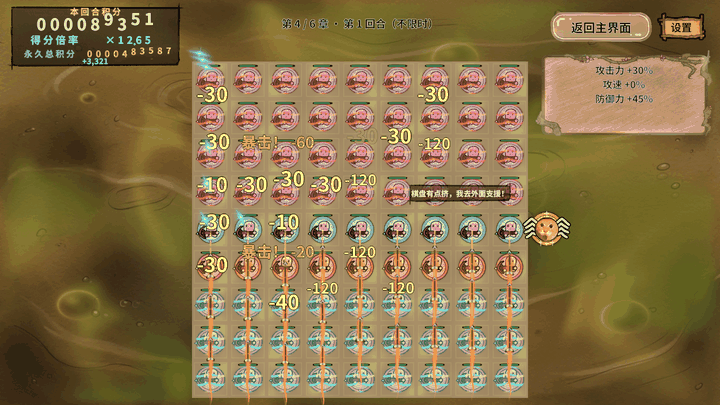

源码参考与实施
- V122 的
LightProfilerSystem.cs:210按业务阶段采样。这次用六章压力段和实际大厅、无尽、围棋、决斗、Gal 分段取样，记录真实工作量和回收。 CameraCullingOptimized.cs:41复用稳定相机输入的计算结果。六章以安全区、像素尺寸和比例缓存基础棋盘布局，先合成真实震动与 Boss 特写，再写入当前变化的镜头和背景姿态。InstancingGroup.cs:813以当前可绘制实例数提交。无尽沿用已有透明材质、图集和排序，把敌人和受伤血条排入固定容量的网格前缀，提交真实用到的顶点与索引。没有待画方块时索引范围为空。Unity 顶点缓冲接口- 共用安全区布局在没有全屏底图且尺寸稳定时，跳过动画组件查找。面板转场、异步换图和布局变更仍走原入口。
六章战斗
每章两轮，81 枚棋子，2.5 秒预热，12 秒采样，开启能量炸弹与区域波动夹具。采样段关闭垂直同步及帧率上限，结束后恢复。每格给出两轮的中位数。
十二段攻击、命中、有效棋子、模型步数、累计伤害及受控技能事件逐段一致。 整帧差值包含 Editor 和排程波动，各章实际结果如下。
| 章节 | 每段攻击 | 整帧 P95（ms） | GPU P95（ms） | 模型步均值（ms） |
|---|---|---|---|---|
| 1 | 693 | 7.950 → 7.993 | 2.124 → 2.121 | 1.077 → 1.119 |
| 2 | 765 | 9.815 → 9.140 | 2.479 → 2.356 | 1.125 → 1.082 |
| 3 | 972 | 9.427 → 8.744 | 2.303 → 2.451 | 1.547 → 1.278 |
| 4 | 891 | 9.728 → 9.691 | 2.286 → 2.282 | 1.273 → 1.251 |
| 5 | 919 | 8.630 → 10.261 | 2.260 → 2.538 | 1.217 → 1.280 |
| 6 | 936 | 9.550 → 8.041 | 2.343 → 2.297 | 1.287 → 1.236 |
展开十二段实测
| 章 / 轮 | GPU 样本 前→后 | 整帧 P95 前→后 | 整帧 P99 前→后 | 命中 前→后 | 总伤害 前→后 |
|---|---|---|---|---|---|
| 1 / 1 | 2472 → 2285 | 7.392 → 7.845 | 13.075 → 13.922 | 2149 → 2149 | 257,071 → 257,071 |
| 2 / 1 | 2401 → 1918 | 7.419 → 10.378 | 12.607 → 14.814 | 2373 → 2373 | 247,485 → 247,485 |
| 3 / 1 | 2039 → 1926 | 8.592 → 8.928 | 14.021 → 14.677 | 3000 → 3000 | 238,623 → 238,623 |
| 4 / 1 | 1826 → 1979 | 10.006 → 10.221 | 16.067 → 14.902 | 2766 → 2766 | 257,955 → 257,955 |
| 5 / 1 | 2063 → 1980 | 8.524 → 9.108 | 13.574 → 14.526 | 2858 → 2858 | 248,702 → 248,702 |
| 6 / 1 | 1948 → 2165 | 9.297 → 8.059 | 14.525 → 13.481 | 2911 → 2911 | 237,746 → 237,746 |
| 1 / 2 | 2173 → 2239 | 8.509 → 8.140 | 13.915 → 13.421 | 2149 → 2149 | 257,071 → 257,071 |
| 2 / 2 | 1519 → 2179 | 12.212 → 7.901 | 18.367 → 13.152 | 2373 → 2373 | 247,485 → 247,485 |
| 3 / 2 | 1768 → 2004 | 10.261 → 8.561 | 15.247 → 13.561 | 3000 → 3000 | 238,623 → 238,623 |
| 4 / 2 | 1878 → 1981 | 9.450 → 9.160 | 14.101 → 14.260 | 2766 → 2766 | 257,955 → 257,955 |
| 5 / 2 | 1999 → 1833 | 8.735 → 11.413 | 13.830 → 15.784 | 2858 → 2858 | 248,702 → 248,702 |
| 6 / 2 | 1915 → 2114 | 9.803 → 8.023 | 14.554 → 13.906 | 2911 → 2911 | 237,746 → 237,746 |
第五章相机配对复核
第五章前两轮对比的整帧 P95 都升高。复核在同一进程交替使用开工版和优化版相机，复用同一关卡、AB、棋子和技能，单独读取相机布置的 CPU 标记。相机帧均耗时的三段中位数为 17.55 → 13.33 µs，作业 20261119-063022-9d069d74。局部 CPU 与 GPU、整帧指标分别解读。
| 配对 | 实测顺序 | 相机帧均 CPU（µs） | 整帧 P95（ms） | GPU P95（ms） |
|---|---|---|---|---|
| 1 | 原版→优化 | 18.17 → 13.18 | 12.058 → 8.543 | 2.525 → 2.297 |
| 2 | 优化→原版 | 16.46 → 13.33 | 8.976 → 8.743 | 2.338 → 2.253 |
| 3 | 原版→优化 | 17.55 → 14.38 | 9.462 → 9.115 | 2.394 → 2.402 |
无尽与其它场景
这些阶段使用同版本真实 AB 和 Editor 的原有同步设置。相同用例各测一次。工作量不同的场景独立解释帧时。
| 场景或阶段 | 每段采样（s） | 整帧 P95（ms） | GPU P95（ms） | 整帧三角形均值 |
|---|---|---|---|---|
| 大厅 | 8.00 | 2.994 → 2.672 | 0.955 → 0.878 | 440 → 440 |
| 普通设置 | 8.00 | 3.003 → 3.097 | 0.972 → 0.901 | 538 → 538 |
| 无尽 · 整备 | 6.00 | 6.118 → 3.616 | 1.200 → 0.976 | 5,083 → 987 |
| 无尽 · 240 敌压力 | 10.00 | 6.451 → 5.551 | 1.388 → 1.274 | 6,410 → 2,493 |
| 本地围棋 | 8.00 | 2.866 → 2.897 | 0.962 → 0.913 | 316 → 316 |
| 本地决斗 | 8.00 | 3.909 → 3.759 | 1.075 → 1.010 | 496 → 486 |
| 鸦鸦 Gal | 8.00 | 2.959 → 2.520 | 0.951 → 0.877 | 124 → 124 |
无尽整备的三角形均值从 5,083 降到 987。压力入口两次均生成 240 只外围敌人，实际计数前后分别是 242 → 46 与 240 → 46。优化后结束附近捕获到 31 个外围方块、5 个受伤血条方块，血条索引数与显示计数一致。
围棋用相同的四手合法棋谱。决斗进入正运行的人机局并核对双方就绪及图集绑定。Gal 由真实入口装载当前剧情，场景、域和画面就绪后才计时。这些数据用于回归判断，单对样本的差值不外推为其它硬件的收益。
实际画面
无尽两张图分别取自压力段结束时的实景，弹幕、飘字和棋子位置会随当时的战斗帧变化。




展开六章画面和第四章战斗动图













展开大厅、围棋、决斗与 Gal


验收记录
- 真实 RevMCP 发现后，用
game.perf.begin启动六章采样。其它场景走带业务断言和收尾的rev_run。 - 五组画幅及安全区规则通过。Boss 演出回归
passed，60 项断言，0 个新增 Unity 错误。重编译回执3a004093fe0b4c99a0d019d590b45e92已完成且消息为空。 - 六章两个作业均正常回大厅，战斗逻辑与棋子资源引用归零，新增错误为零。其它场景均完成对应返回和采样器释放。
- 移除相机对照夹具并重编译后，最终代码冷启动跑完第五章。无尽额外核对 1024 容量的出生、提交及返回重入，下一局从空渲染范围开始。
- 六章基线
20261119-055505-2dbb62c4，复测20261119-061411-b133be54。实际 PC 资源清单 SHA-256 为025a0f892a36456f9e470f011532fb6b7727e5200786defa011ab66b1b236d50。 - 实测覆盖当前 Windows Editor 环境。Android/iOS 实体设备、长期温控与在线多人压力须有对应设备数据。全部工单位于
.codex/work/wzry-perf-2026-11-19/。